框架替 Agent 做决定
宿主先判断用户意图，再选择固定动作或模板，把模型限制在一条预先写好的路径里。
- 关键词 Planner 与正则 Patch 容易把复杂指令压扁
- 工具 allowlist 可能裁掉 Extension 和原生 coding tools
- 短请求生命周期让长任务经常“只做一半”
- 前端自行拼装历史，无法恢复完整 AgentSession
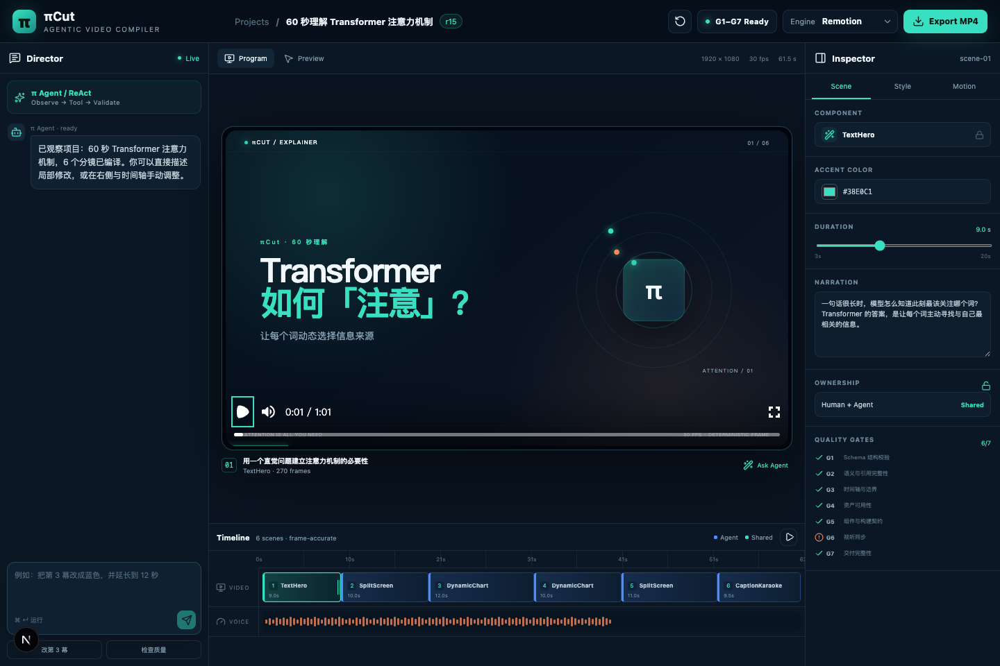
一套把原生 Pi Agent、自主工具调用、自由视频画布、传统剪辑交互和确定性交付连接在一起的视频工程系统。
它是一套由 Agent 驱动、但仍然允许人精确介入的视频工程环境。用户可以用自然语言提出目标，也可以在时间线、Inspector 和画布中直接编辑；两种操作最终都会进入同一份可版本化 VideoSpec。
项目的重点不是替用户“一键生成一个不可修改的视频”，而是让生成、编辑、校验、恢复和交付处于同一个连续工作流。
保留完整 AgentSession、工具循环、Skills、Extensions、会话历史、自动重试和 compaction。
Director、Canvas、Timeline、Inspector、审批和导出不是装饰，而是 Agent 与用户共享项目状态的表面。
任何修改都对应 revision 与 ChangeSet，再经过 G1—G7 和双引擎编译为可追踪交付物。
字幕、VideoSpec、资产清单、渲染清单和 SHA-256 共同说明这条视频如何产生。
真正的视频工作流还要回答：谁改了什么、状态能否复现、渲染为何这样选择、交付是否完整。
用户 brief、选中镜头与播放头上下文
AgentSession 观察、规划、调用工具
唯一事实源、版本与 ChangeSet
G1—G7 逐级验证可交付性
Remotion / HyperFrames 自动路由
视频、字幕、清单与完整性摘要
Director、画布、Inspector、时间线与交付状态已经汇聚在同一个编辑表面。
早期方案希望通过手工 planner、固定提示、工具白名单和前端状态机让行为更可控。但这些层一旦替代了 Pi 自己的运行时，就会切断 Skills、Extensions、工具循环、项目上下文和会话恢复，使前端里的 Agent 只剩“模型聊天”。
宿主先判断用户意图，再选择固定动作或模板，把模型限制在一条预先写好的路径里。
完整 Pi AgentSession 保留规划权；πCut 只提供视频工具、结构化状态、人机交互和交付约束。
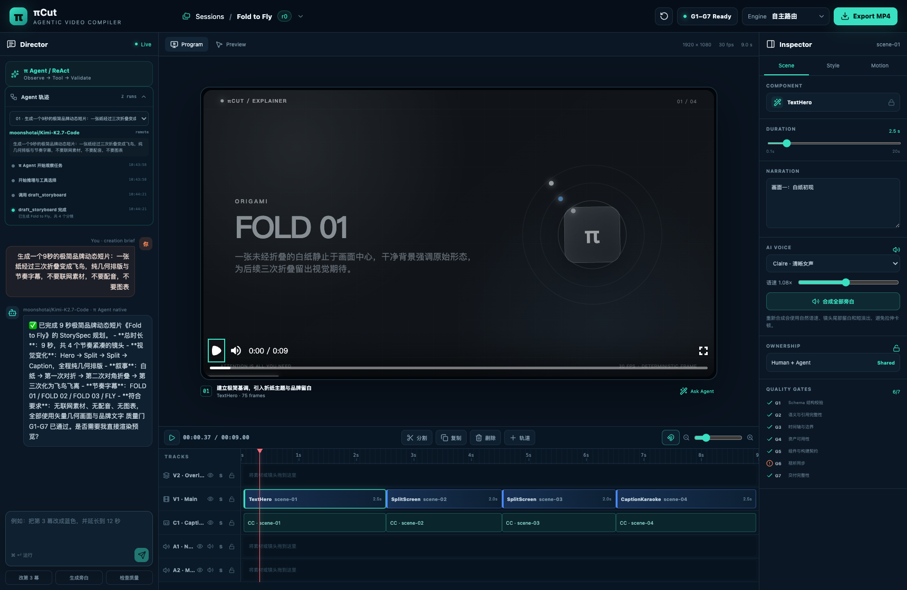
复用 Pi 的设置、认证、项目指令、扩展、重试与 compaction。
与原生 coding tools 同时可用；不靠关键词 planner 或正则补丁伪装 Agent 行为。
本地技能与项目上下文进入同一个 ResourceLoader，诊断为 0。
我们没有再写一套“视频 Agent 大脑”。原生 Pi 继续负责理解需求、读取技能、选择工具、观察结果、修复错误和决定下一步；πCut 负责把视频领域变成它能够可靠行动的环境。
这样的边界既保留了 Agent 的泛化能力，也让视频编辑中的 revision、审批、素材许可、质量门和最终导出仍然可控。
当模型需要“把第二幕缩短、换成真实积雨云、保留字幕节奏并重新导出”时，真正困难的不是生成一句回答，而是让它准确看见当前项目、选择合适工具、提交可撤销修改，并证明最终结果来自正确 revision。
`get_video_spec` 暴露镜头、轨道、质量门、待审批项和 UI 选区，避免 Agent 在模糊上下文中猜“这个”。
`draft_storyboard`、`update_scene`、`apply_video_patch` 与结构工具直接写入真实消费字段，并形成 revision。
素材搜索、可信下载域、许可署名、本地资产化与可选 TTS 都通过独立工具和安全边界完成。
运行时守卫要求已提交修改的回合调用 `validate_spec`；正式渲染仍需要明确授权。
新增、删除、重排和整体重构进入 checkpoint；文字、颜色、位置和普通动画可以直接提交。
不静默替换成示例工程，也不谎报完成；保留失败原因、transcript 和当前 VideoSpec 以便重试。
不是“聊天记录 + 一坨不可逆结果”，而是一份可校验、可版本化、可编译的视频描述。
UI 与 Agent 的动作都提交 ChangeSet，随后由同一 revision 驱动画布、时间线、Inspector 与渲染器。
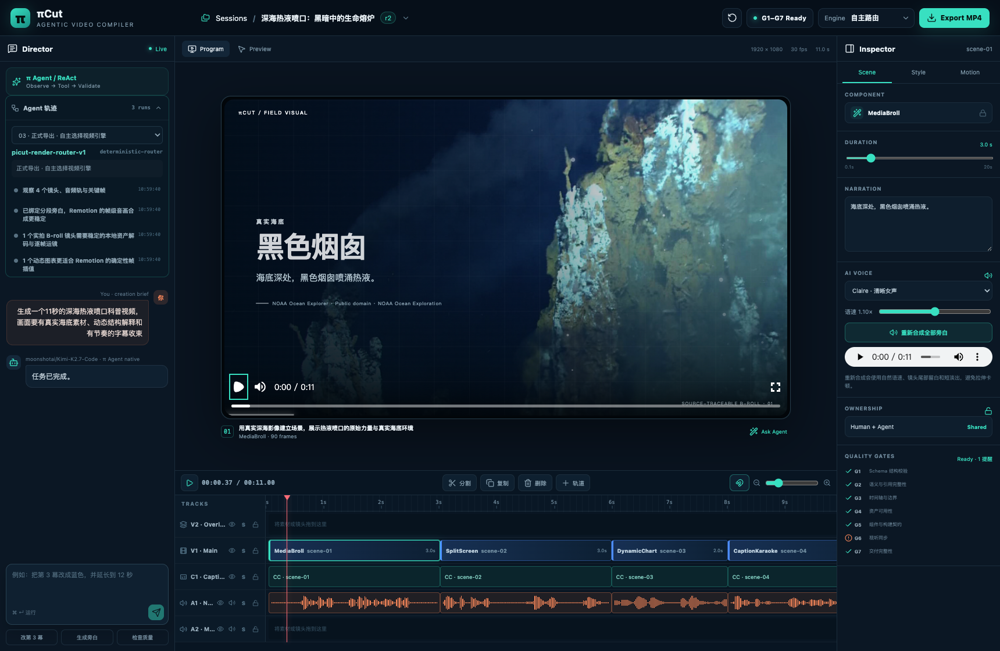
轨迹展示 Pi 正在观察什么、调用了哪些工具、生成了哪个 revision、质量门是否通过、选择了哪个引擎，以及失败后是否发生 fallback。
创建、编辑、素材检索、校验和渲染都有阶段与结果，长任务不再只能盲等。
能区分是模型决策、工具参数、素材许可、VideoSpec、质量门还是渲染 adapter 出错。
断线或进程中断后，可以从 jobId、原生 session 与当前 revision 继续，而不是重新猜测上下文。
selected、scores、confidence、reasons、fallback 和 executed 会写入 RenderManifest。
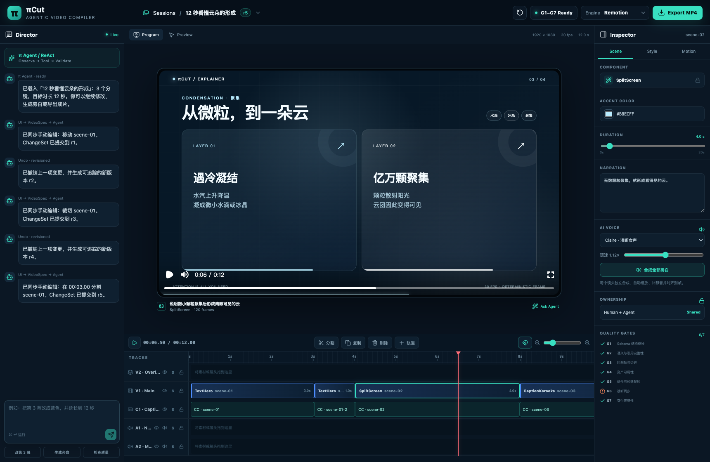
选中、移动、裁切、分割、复制、删除、关键帧、特效与转场。
每次 UI 修改进入新版 VideoSpec，并形成可追踪修订。
选中 scene、播放头、Inspector tab/field 与 revision 一起注入 Agent。
人机协作不是把所有操作都拦住审批，也不是把项目完全交给 Agent。πCut 根据变更风险划分执行方式：普通可逆编辑直接提交，提高协作效率；会改变视频叙事结构的动作先形成完整提案，再由用户批准或拒绝。
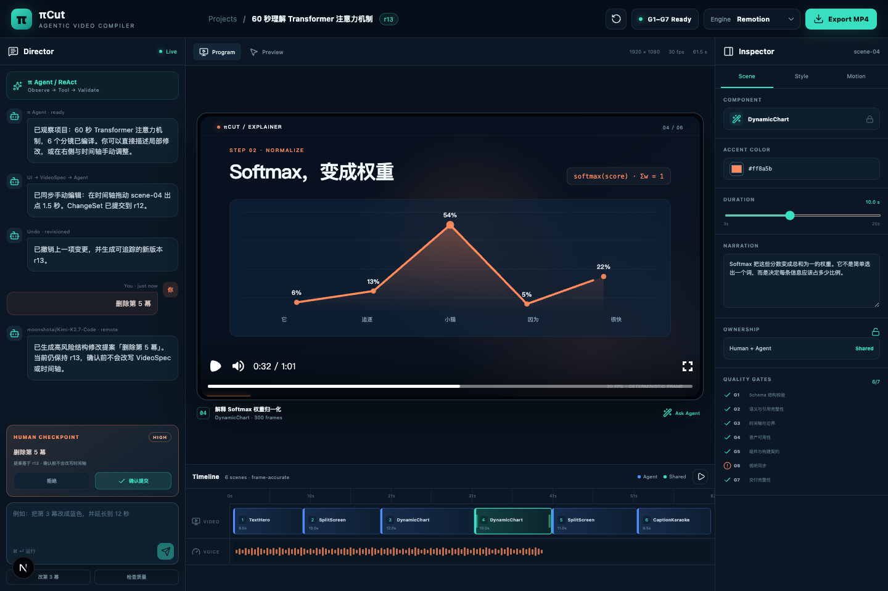
早期将 TextHero、SplitScreen、DynamicChart、CaptionKaraoke 和 MediaBroll 作为 Agent 的主要选择空间。这样很容易得到“能渲染”的结果，但不同主题会反复落入相似构图、相似节奏与相似信息卡，Agent 的视觉判断被五种模板提前决定。
因此我们没有删除组件库，而是改变它的地位：组件继续作为高效、可靠的预制积木；默认创作空间升级为 SceneCanvas，自由图层成为 Agent 的第一等表达能力。
组件定义了画面骨架。Agent 能改文案、颜色和有限参数，但难以改变信息的空间关系，视频容易形成统一的“卡片感”。
Agent 可以自由放置文字、指标、徽标、公式、代码、图形、线条、图表、图像与粒子；预制组件只在它确实适合时被选择。
下方来自当前 `freedom-canvas-e2e-0822` 项目的真实 Remotion 输出。三个镜头均使用 SceneCanvas，而不是五种预制卡片组件。
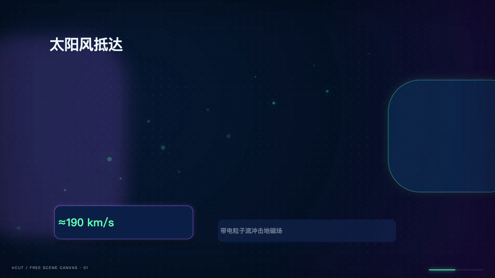
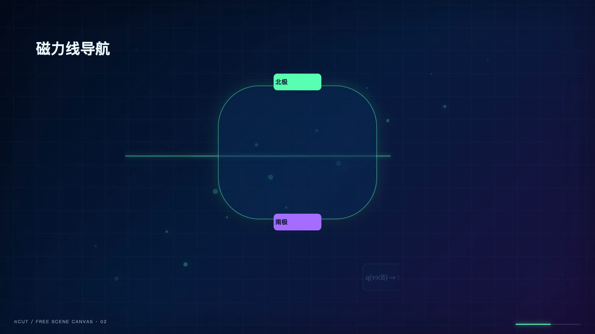
每个 SceneCanvas 最多容纳 40 个独立图层，同时保持 Schema 可校验。
文字、徽标、指标、公式、代码、图形、线条、图表、图像和粒子等表达元素。
坐标、尺寸、样式、入场时序与镜头运动可以分别定义，而不是绑定在模板插槽中。
同一 SceneCanvas 可编译到 Remotion 帧级动画与 HyperFrames DOM/GSAP 时间线。
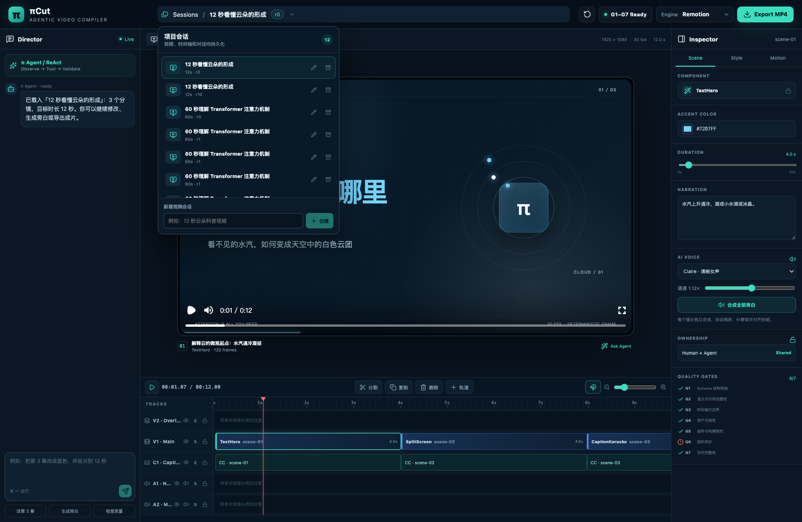
长任务不再绑定单次 HTTP 请求生命周期。
工具调用、状态变化与完成结果通过事件流回传。
会话、转录与 VideoSpec 可恢复；按项目排队并幂等写入。
job detail / retry API 让失败是状态，而不是丢失。
不是给两个引擎分别写两套内容，而是让统一描述被不同 adapter 确定性消费。
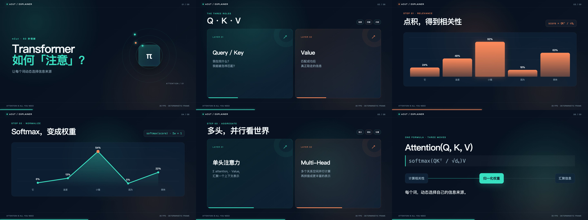
适合组件化、帧级可控、工程化程度高的解释型画面。
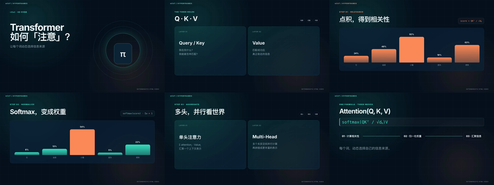
适合视觉优先与高风格化镜头，并保留回退到 Remotion 的路径。
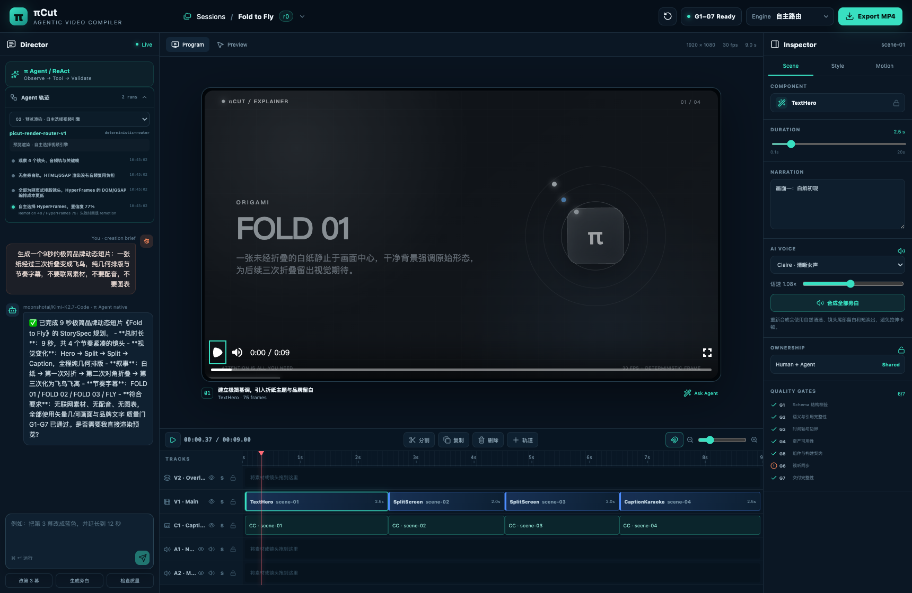
路由分数不是只给界面看；它与原因、fallback 一起进入 trace 与 RenderManifest。
score依据场景组件、视觉诉求与 adapter 能力计算reasons解释为何命中当前引擎fallback主引擎失败时保持可交付路径这里区分“系统能力已经证明”与“公网产品已经承诺”，避免把本地完整度误读为生产就绪度。
πCut 的价值，不只是让 Agent 生成视频；而是保留原生智能，为它提供可行动的视频环境，再把创作过程沉淀为可编辑状态、可观察轨迹与可复现交付。